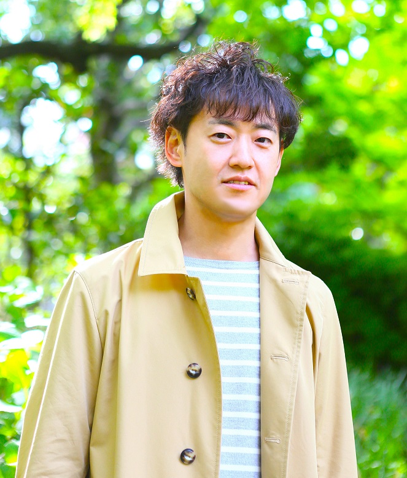

代表者紹介
プロフィール

山田耕三
1997年生まれ。
東京大学法学部 卒業。
2002年 テレビ東京 入社。
制作局にて音楽／バラエティ番組を中心に様々な番組制作を担当。
「ハロモニ。」「音楽ば～か」「やりすぎコージー」「木曜8時のコンサート」「年忘れにっぽんの歌」「MelodiX!」など
WEB連動の企画を得意とし、2015年6月から制作プロダクション テレビ東京制作（PROTX）へ出向してからは多くのWEB連動地上波番組／WEB番組を制作。
2017年アジア地域最大の広告賞Speaks AsiaでBronz獲得
"BULLET TRAIN" CONNECTED MUSIC VIDEO
2018年1月 独立。株式会社つくりば 設立。
テレビ／ネットにまたがるエンターテイメント全般のプロデュースを手掛ける。
WEB連動番組／WEB番組 実績（一部抜粋）
- 地上波／ニコニコ動画連動レギュラー番組「ドリームクリエイター」（2011年-）
- ニコニコ動画特番 サントリー提供 「集中リゲイン Presents「集中」なんてつくれるか実験してみた」（2015年8月）
- ニコニコ動画特番 JRA提供【うまび杯】真昼の決戦 勝ち馬はオレだ【有馬記念編】（2015年12月27日）
- ニコニコ動画特番 Yahoo!ジャパン提供 「ヤフヤフ学園抜打ちテスト」（2016年4月23日）
- ニコニコ超会議「テレビ東京ブース」制作／プロデュース（2016年4月29日 30日）
- 地上波特番 Google提供「最強エンターテイナー Game Live」（2016年6月26日）
- LINE LIVE公式特番「テレ東音楽祭 LINE LIVEスペシャル」（2016年6月29日）
- Abema TV レギュラー配信「アップアップガールズ（仮）武道館 借りてみたけど」（2016年9月-11月）
- テレビ東京／LINE LIVE公式連動プロジェクト「〇〇と新どうが」（2017年4月-）
- ガンホーフェスティバル2017 メインステージ 総合演出（2017年5月28日）
- テレビ東京「エンタX」（2017年10月-）